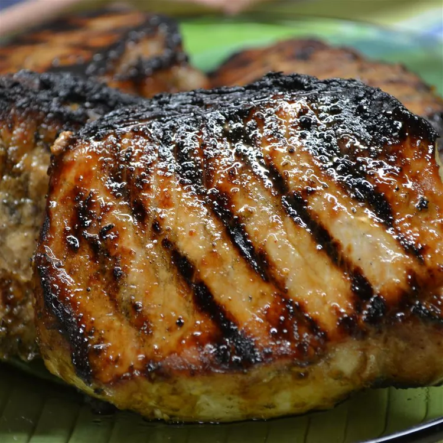

Grilled Jamaican Jerked Pork Loin Chops

I like to buy a whole pork loin then cut them into
chops so that I can get the thickness just right.
You can also use the marinade with pork tenderloin,
baby back ribs, and chicken.
Ingredients
- ½ (12 ounce) bottle lager style beer
- 3 fluid ounces dark rum
- ¼ cup molasses
- ¼ cup soy sauce
- ¼ cup lime juice
- 2 tablespoons minced garlic
- 2 tablespoons minced ginger
- 1 scotch bonnet chile pepper, minced
- 2 teaspoons chopped fresh thyme
- 2 teaspoons chopped fresh marjoram
- 1 ½ teaspoons ground allspice
- 2 teaspoons ground cinnamon
- 1 teaspoon ground nutmeg
- 2 bay leaves
- 8 (6 ounce) pork loin chops
- kosher salt and cracked black pepper to taste
Steps
-
Pour the beer, rum, molasses, soy sauce, and lime
juice into a bowl. Stir in the garlic, ginger,
scotch bonnet pepper, thyme, and marjoram. Season
with allspice, cinnamon, nutmeg, and bay leaves.
Place the pork chops into a zip top bag, and pour
in the marinade. Refrigerate overnight.
-
Prepare an outdoor grill for medium heat. Take the
pork chops out of the marinade, place on a plate,
and allow to sit at room temperature for 15 to 20
minutes as the grill heats.
-
Season the chops to taste with kosher salt and
cracked black pepper. Grill the chops on both
sides until a thermometer inserted into the
center registers 145 degrees F (63 degrees C).
Allow the pork chops to rest for about 5 minutes
before serving to allow the juices to redistribute.